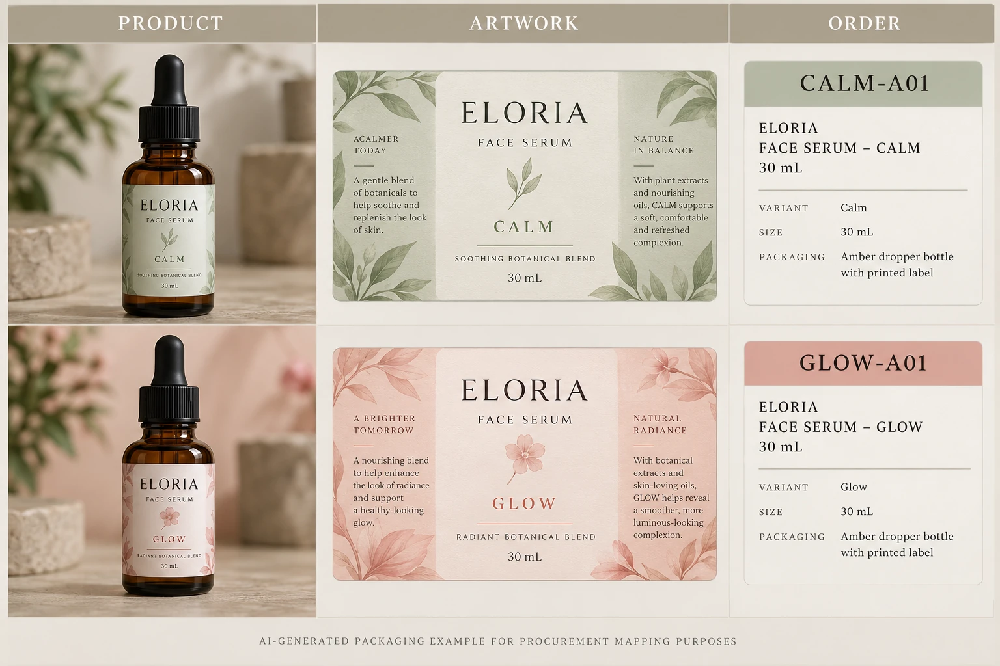

Decide what each code identifies
An internal product code, an artwork code and an order-line reference can identify different things. Write down those meanings before trying to make every department use one short number for everything.
A product may have several packaging components. One serum can require front, back and carton labels, each with its own artwork. An artwork can also have revisions over time. Treating every component and revision as the same label because the product name matches leaves receiving with an ambiguous instruction.
Choose a naming convention your team can maintain. It can be simple, but avoid relying solely on color, informal abbreviations or a filename ending in final. Keep the unique reference stable enough that an enquiry, proof comment and delivery record can point to the same intended item.
Build the dictionary from actual order items
Start with the product owner's current item list and the artwork owner's approved releases. Reconcile them against the order quantities. Do not create an apparently complete dictionary by guessing which unlabeled PDF belongs to which product.
For each orderable label item, record the product, component, relevant version, artwork ID and released revision. Add the exact ordered quantity and the supplier's acknowledged description. If the supplier uses a different job reference, include that as a cross-reference rather than replacing the brand's identity silently.
The variable-data guide addresses records merged into a template. A dictionary is useful even when every SKU has a separate fixed PDF. It controls which fixed item is being purchased and received, without introducing an unnecessary data-merge workflow.
Resolve aliases instead of deleting the history
Old names can remain useful as search aids. Record the previously used name as an alias, alongside its accepted current reference and status. Make clear whether it describes the same item, a superseded artwork or a different product.
Avoid reusing an obsolete code for an unrelated variant simply because the number is available. That can make an old order or retained sample appear to refer to the new item. If the team changes its naming convention, maintain an explicit mapping and communicate which reference applies to the new order.
The same caution applies to supplier shorthand. A code printed on a carton is helpful only if the receiving team has the corresponding definition. Ask the printer how its dispatch identification will connect to the acknowledged order, and include that record in the handoff.
Use one row per ordered label item
This editorial table is intentionally separate from a regulated identifier registry or a software implementation.
| Field | Information | Question it answers |
|---|---|---|
| Internal item | Stable label-item reference | Which item does this row control? |
| Product | Brand-approved product and variant name | Which product receives it? |
| Component | Front, back, lid, carton or other defined part | Which physical label is ordered? |
| Version | Relevant language or market artwork reference | Which approved content belongs here? |
| Artwork | File ID and accepted revision | Which output may be printed? |
| Order | Quantity and purchase-order line | What was actually requested? |
| Supplier mapping | Acknowledged job/dispatch reference | How will delivery be recognized? |
| Status | Released, pending or superseded | May this item enter the current job? |
Complete identity and component first. Match each row to its artwork, then reconcile quantities and supplier descriptions. Before release, have purchasing and the artwork owner resolve blank or conflicting references. At receiving, use the acknowledged mapping and the site's inspection method to compare the delivered identification with the order.
Hold the affected item if two different approved files claim the same active reference, if the quantity cannot be assigned to a specific version or if a supplier code has no agreed meaning. A neat spreadsheet with unresolved identity fields is still an unresolved order.

Keep commercial identity separate from barcode decisions
A readable barcode can still be associated with the wrong internal order line. Conversely, a correct internal reference does not determine whether a product change requires a different GTIN. The GTIN change-review guide routes that decision to the responsible product-data owner.
Consider a hypothetical order for two fixed serum variants. A short controlled dictionary can be enough if everyone uses it consistently. A larger range with multiple components and concurrent revisions may need a more structured system and assigned maintenance responsibility. Software choice should follow that actual coordination problem.
For custom cosmetic label production, provide container details, dimensions, artwork and quantities by identified item. Include the dictionary and any supplier-reference questions. Use the inquiry form to prepare a message, then send files by email or WhatsApp. Ask for an acknowledgement that receiving can interpret without guessing which green label the order meant.